Desa Wisata Tingkir Lor memiliki lanskap
alam yang indah mulai dari gunung, hingga areal persawahan
yang hijau. Lokasinya hanya 300 meter di sisi barat pintu keluar
Tol Salatiga. Selain wisata alam, Desa Tingkir lor terdaoat
makam Mbah Abdul Wahid merupakan canggah KH Abdurrahman Wahid,
atau Gus Dur. Wisatawan dapat mencoba paket wisata bersepeda
dengan suasana pedesaan yang asri dan sejuk. Alamat: Desa Tingkir Lor, Kec. Tingkir, Kabupaten
Salatiga, Jawa Tengah.
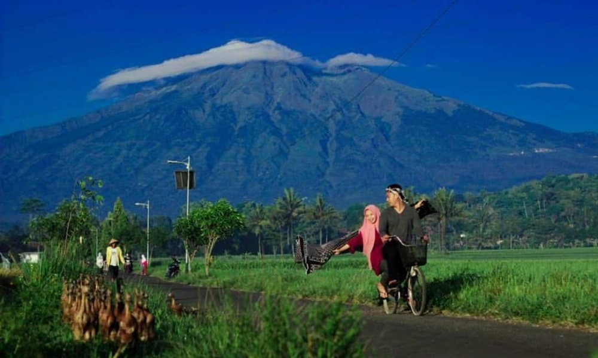
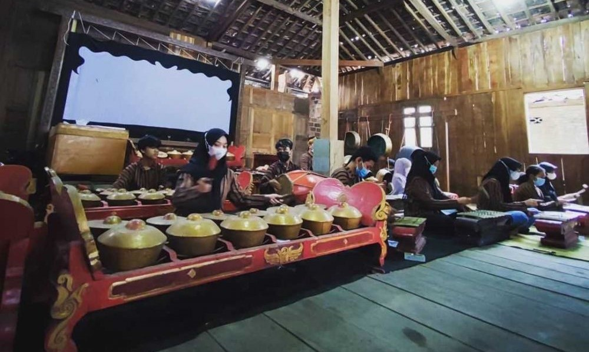
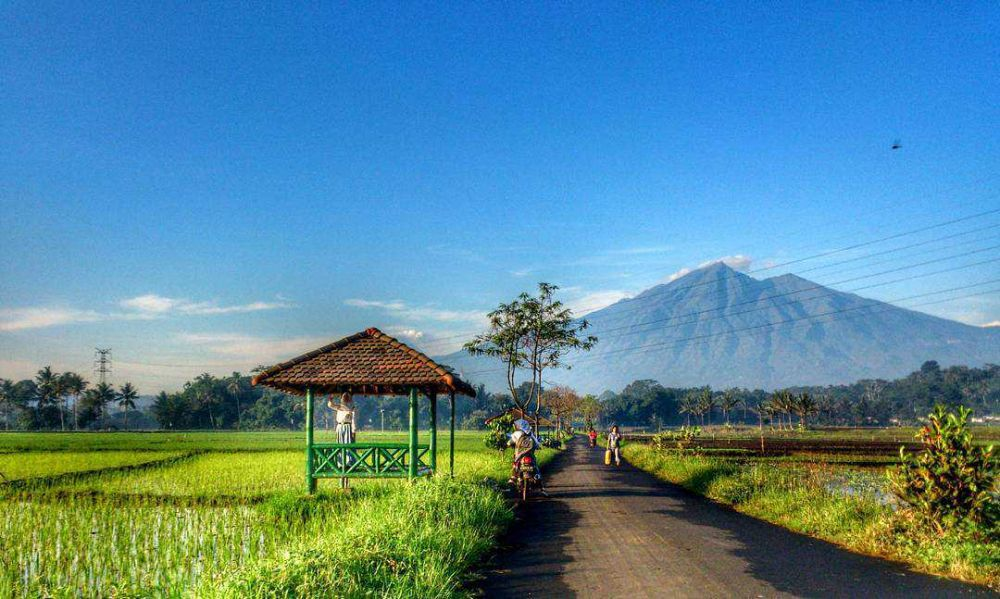
Desa Wisata Kemetul
Hanya dengan memaksimalkan potensi sawah, warga setempat
berhasil mengubah wajah Desa Kemetul menjadi tempat wisata yang
menarik. Ditepi sawah, terdapat gazebo-gazebo yang diperuntukkan
wisatawan untuk menikmati hijaunya hamparan sawah. Bagi para
penghobi selfie, Desa Wisata Kemetul juga menawarkan spot foto
yang instagramable. Ditengah sawah, dibangun sebuah gardu dari
bambu yang menyerupai bintang. Wisatawan bisa berselfie ria,
sembari menikmati hembusan angin sepoi-sepoi dan panorama alam.
Alamat: Desa Kemetul,
Susukan, Semarang
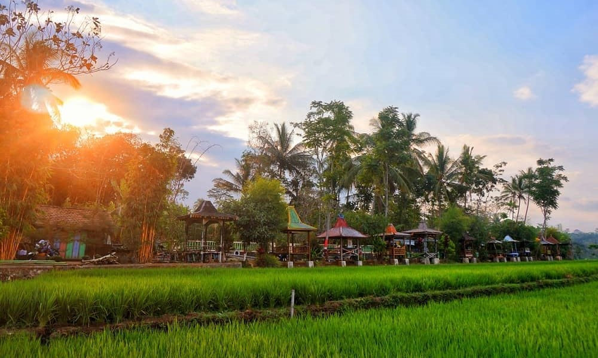
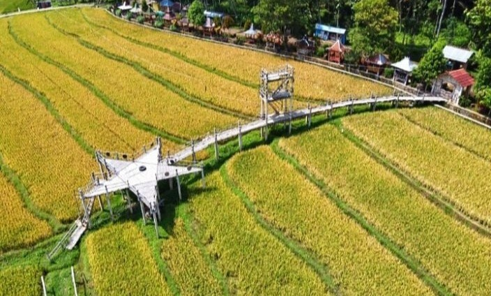
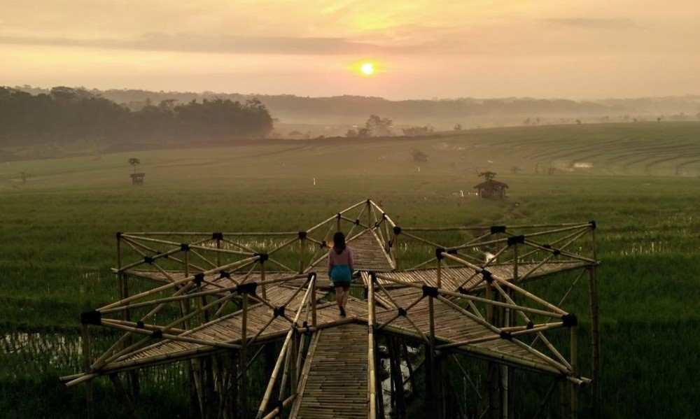
Desa Wisata Bejalen
Sebuah desa dengan pesona matahari terbit di Rawa Pening. Area persawahan yang subur, dan
dengan pemandangan pegunungan di arah selatan dan utara, menjadikan Desa Bejalen adalah
tempat terbaik untuk bersantai bersama alam. Desa Bejalen memiliki banyak atraksi kegiatan
wisata yang unik dan khas pedesaan, menjadikan waktu liburan Anda akan terasa berkesan.
Alamat: Bejalen, Kota Semarang, Jawa Tengah.
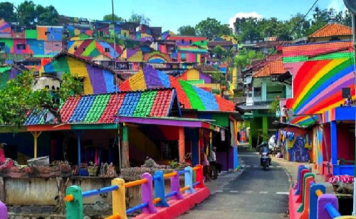
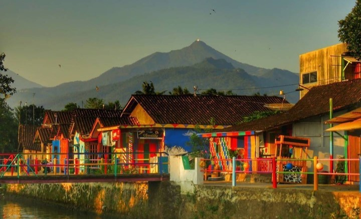
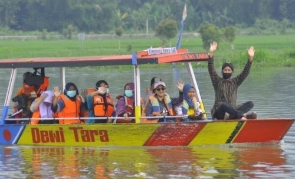
Desa Wisata Lerep
Desa Wisata Lerep terletak di lereng gunung Ungaran Kecamatan Ungaran Barat Kab. Semarang,
suasana pegunungan dengan udara sejuk dan pemandangan yang indah. Desa Lerep menciptakan
pasar Kuliner jajanan Ndeso tempo
dulu yang diadakan setiap hari Minggu pon dan Minggu Pahing. Hasil pertanian diolah menjadi
makanan tradisonal dengan konsep alami tanpa menggunakan bahan kimia, tanpa pewarna buatan,
disajikan dengan kemasan daun.
Alamat: Lerep, Ungaran Barat, Kabupaten Semarang,
Jawa Tengah
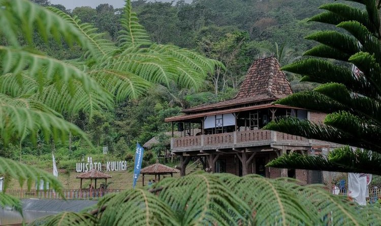
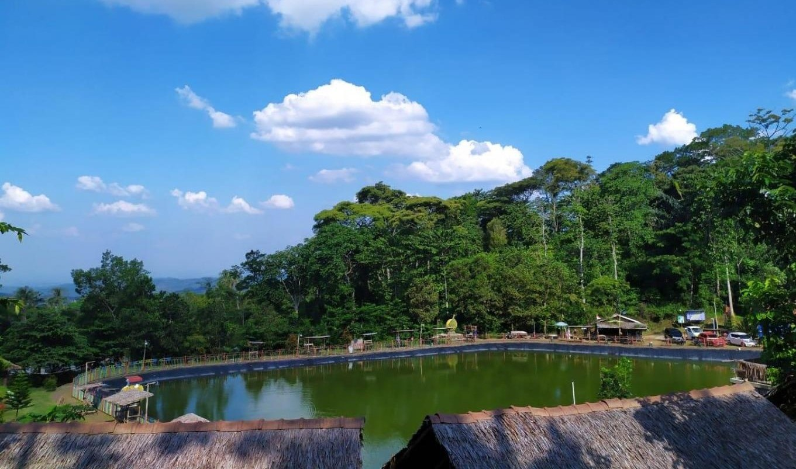
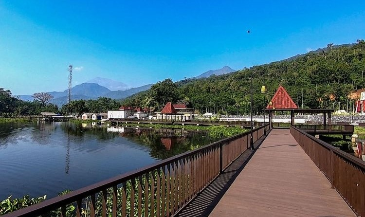
Desa Wisata Branjang
Sebagai salah satu desa di pulau Jawa, masyarakat Desa Wisata Branjang masih lekat dengan
budaya dan tradisi Jawa. Ada Iriban yang mempunyai filosofi menjaga sumber air dan tradisi
Tingkeb Tandur yang dilaksanakan petani ketika masa tanam padi tiba.
Kesenian reog, tari dan gamelan serta wisata religi di Gunung Jadi menjadi daya tarik
tersendiri yang membuat Desa Wisata Branjang patut dikunjungi untuk merasakan pengalaman
wisata yang berbeda dari biasanya.
Alamat: Branjang, Ungaran Barat, Kabupaten Semarang,
Jawa Tengah